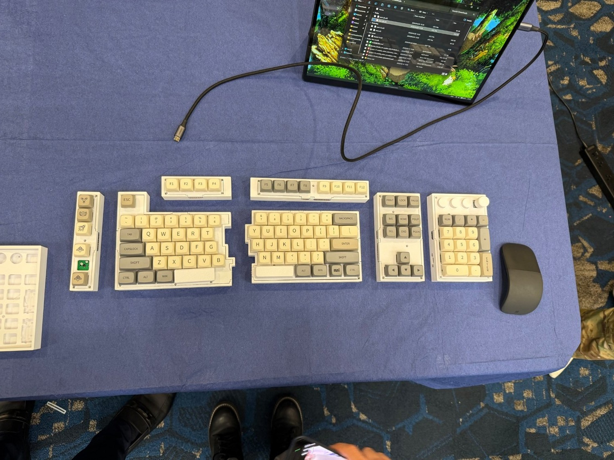
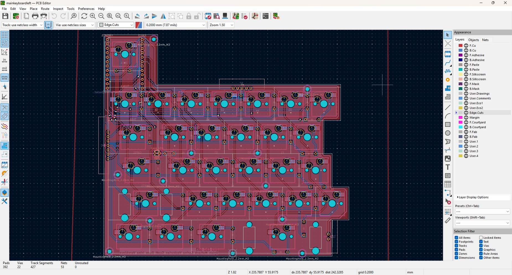
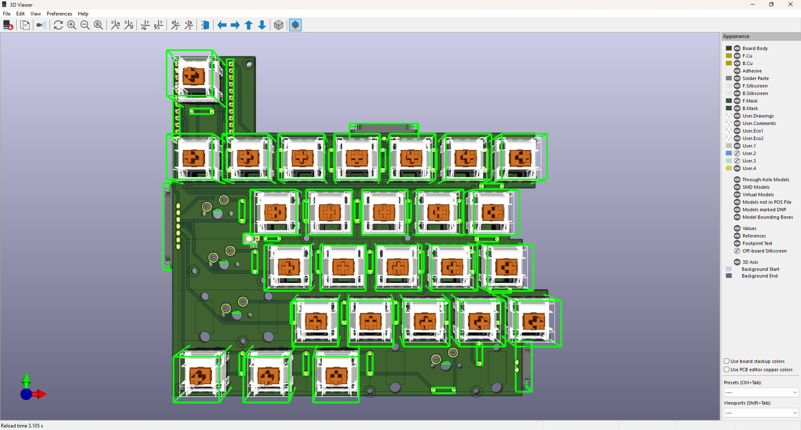
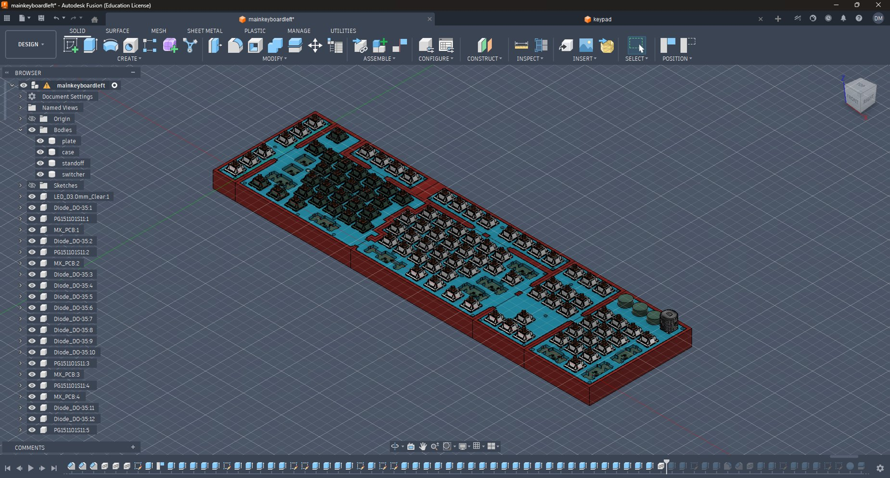
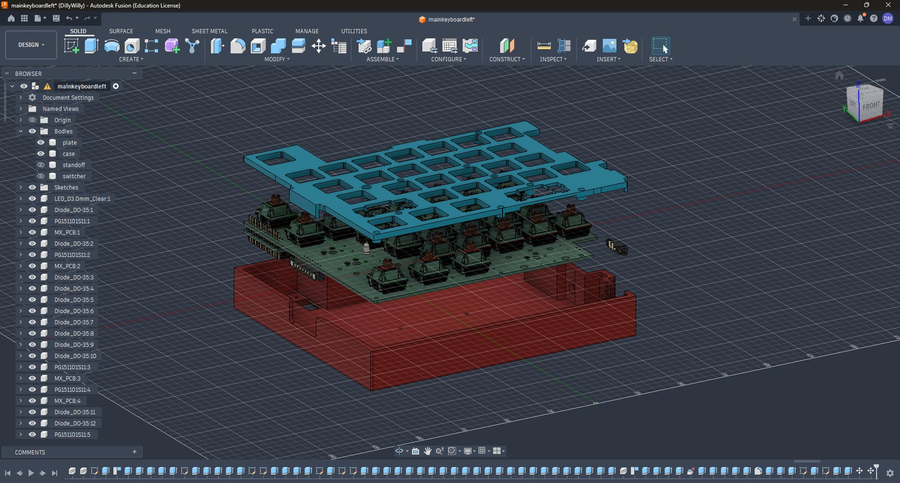
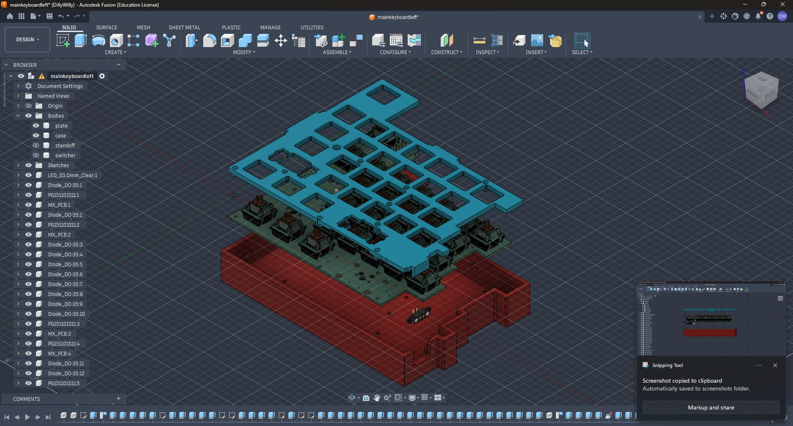
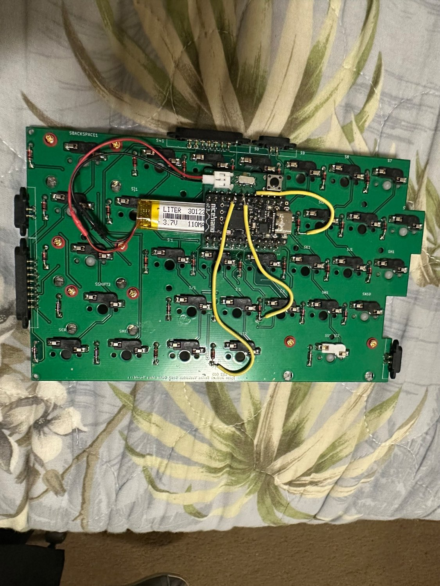
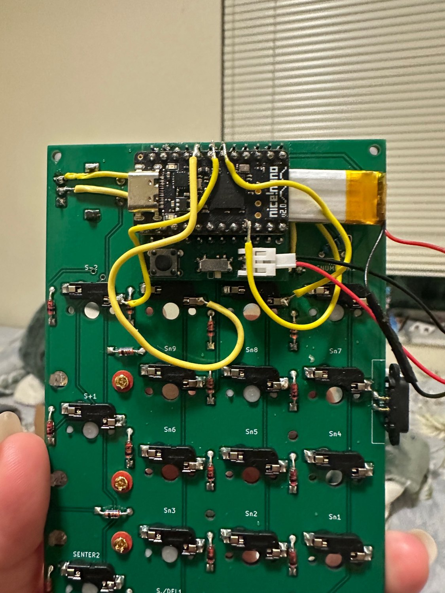

Modular
Wireless Keyboard.
A fully functional, reconfigurable mechanical keyboard built around custom PCBs, detachable modules, magnetic pogo-pin interconnects, and wireless operation.

One keyboard. Multiple configurations.
Different work and gaming situations benefit from different key layouts. Our team wanted to build a single keyboard that could be rearranged rather than forcing users to maintain several separate keyboards.
The result combined three MCU-equipped wireless sections—the left half, right half, and numeric keypad—with additional function-row, macro-key, and arrow-key expansion modules that connect through magnetic pogo pins.

Custom circuits and modular connections.
I designed PCB schematics, keyboard matrix circuitry, board layouts, and electrical connections in KiCad. Three nRF52840-based controller sections communicated wirelessly: the left half acted as the primary unit paired to the computer, while the right half and keypad communicated with it. The host recognized the entire keyboard as one Bluetooth device named “Modular Keyboard.” Firmware configuration was developed by teammates using ZMK.


The archived project contains source files for the keypad, function modules, macro module, both main keyboard halves, arrow module, and MCU board.
Fit, strength, and restraint.
Designing the enclosure meant balancing clearance for internal electronics with a compact exterior. The magnetic interfaces also needed to hold modules reliably without introducing unnecessary bulk or visible gaps.
I developed and refined mechanical models in Fusion 360 and produced 3D-printable cases and plates. The final geometry was adjusted through repeated fit checks and physical assembly.



Recovering from mirrored PCB connections.
During integration, we discovered that some pin connections in the fabricated PCBs had been mirrored. The failure wasn't immediately obvious: I used a digital multimeter to perform continuity checks, follow electrical paths, and identify the incorrect connections.
There wasn't time to wait for another complete PCB fabrication cycle. Instead, I cut the affected traces and soldered jumper wires to correct the mappings. These reworked boards were used in the final working keyboard.
Trace connections and isolate the mirrored pins with DMM continuity testing.
Cut incorrect PCB traces and install jumper-wire repairs.
Reassemble, test, and deliver the functioning system within the deadline.


Three controllers. One Bluetooth keyboard.
The system used three independent MCU-equipped sections: the left keyboard half, the right keyboard half, and the numeric keypad. The left half was the primary controller and maintained the Bluetooth connection with the host computer, which identified the complete system as one device named “Modular Keyboard.” The right half and keypad each used their own nRF52840-based MCU and communicated wirelessly with the left half.
By contrast, the function-row, macro-key, and arrow-key modules had no dedicated MCU. They relied on physical magnetic pogo-pin connections to compatible MCU-equipped sections for input scanning and operation.
Expansion modules attach to compatible MCU-equipped sections; the lower row represents a module category, not specific wiring paths.
Contribution boundaries: I conceived and led the project and personally handled the PCB/electrical design, component selection, enclosure CAD, fabrication, soldering, rework, integration testing, and project coordination. My teammates developed the ZMK firmware. Team members: Dylan Matlock, Sarina Voskorian, and Irina Vorobieva.
Working hardware — despite the constraints.
The team delivered a fully functional wireless keyboard with interchangeable modules. The final build retained the jumper-wire PCB repairs because meeting the delivery deadline mattered more than waiting for aesthetically pristine replacement boards.
Wireless typing and live module separation.
The original 37-second handheld showcase recording demonstrates wireless typing with all sections connected, then shows modules being separated while the keyboard continues functioning. This is authentic event footage, not a staged product video.
What I'd improve in version two.
The final prototype proved the concept, but I'd refine the design in several important ways:
- More seamless center joint: redesign the connection between the left and right keyboard halves so they meet as cleanly as a traditional full-size keyboard.
- Custom integrated MCU circuitry: replace the prebuilt development boards with my own controller circuitry integrated into the PCB design. This would allow a thinner overall enclosure and more control over hardware packaging.
- Single charging solution: redesign power distribution and charging so the complete keyboard could be charged from one connection instead of charging sections separately.
- PCB design revision: correct the mirrored pin connections at the schematic/layout level and fabricate validated boards without jumper-wire rework.
These are proposed improvements for a future revision, not features of the completed prototype.